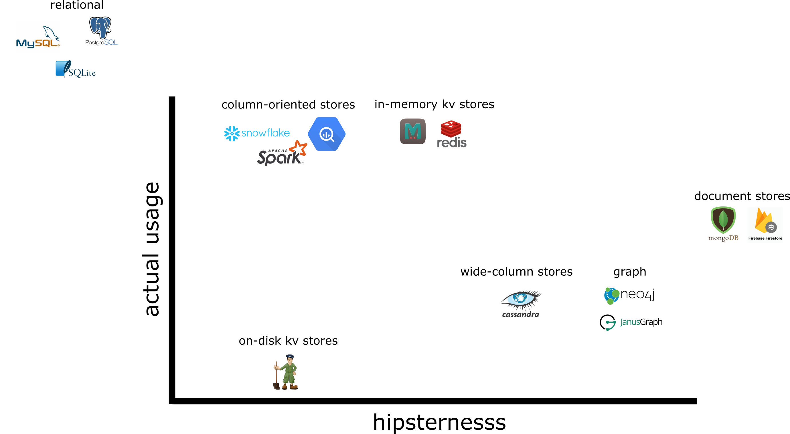
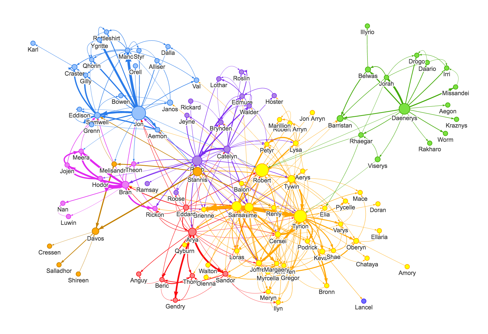

A Primer on Database Architectures
Part I: What Is A Database?
There are just three intrinsic properties in a database: * Persistent insert * Persistent read * Delete That's it!
A database is *not* required to have: * Transactions * SQL
What is **SQL**? SQL is a declarative programming language for querying databases. ```sql SELECT (name, job_title AS role, job_id) FROM employees; ``` ```sql INSERT INTO employees ("Aleksey Bilogur", "Glue Person", 42); ``` ```sql SELECT employees.id, jobs.job_id FROM employees INNER JOIN jobs ON employee.job_id=jobs.job_id ```
SQL is a specification, which is implemented to various degrees by various different database vendors. It's supposed to be *portable* and *read like plain English*.
What is a **transaction**? ```python db = create_database_connection() transaction.begin() db.exec("INSERT INTO table ('a', 'b', 'c')") db.exec("INSERT INTO table ('d', 'e', 'f')") try: db.commit() except: db.rollback() transaction.close() ```
Until the NoSQL movement gained traction in ~2010, all commonly used databases used SQL. Some databases shipped without it (you would write queries using the vendor's Python/JS/etcetera API package instead). In 2021, databases are mostly back to shipping with SQL support (including the ones that started without it!).
Part III: Data Models In Use Today

## relational databases * SQLite, PostGres, MySQL, MariaDB, etcetera. * Relational schema, SQL query language. * Optimized for online transaction processing. * But can do almost anything these days. * Want to use something else instead? You better have a compelling reason why.
### <img src="img/sqlite.png" width="200"/> * A simple file-based DB (no managed DB process). * No concurrency—all requests are serial. * Transactions. * Limited SQL support. * Open source.
### * The most popular full-featured relational DB. * Concurrency, transactions. * Broad SQL support. * Open source. * Great plugin ecosystem (PostGIS etcetera).
### * The second (?) most popular full-featured DB. * Concurrency, transactions. * Broad SQL support. * Open source.
### * Closed source. * 🌈 "enterprise ready" 🍀 * No that doesn't actually mean anything. * Used for historical reasons. * Or by large orgs that need support contracts.
## on-disk key-value stores * A hash map that flushes to disk. * Extremely simple data model. * Uses a log-structured file for storage. * Mostly used for data-persistence-as-a-service by more complex APIs. * Examples: Bitcask, Apache Zookeeper
## in-memory key-value stores * A hash map (mostly string-to-string) that is kept in memory (RAM). * Upside: *fast as all hell*. * Downside: *data gets wiped on process crashes*. * Modern implementations have some persistence features but this is a huge slow-down. * Typically used as a **caching** layer in front of a truly persistent backing service. * Exampes: Memcached, Redis.
## document stores * Stores data in **documents** (typically arbitrary JSON) instead of tables. * Upside: easy to use! Promotes **locality**. * Downside: data becomes **schema-on-read**. Limited transaction support. Implementations have historically been buggy as hell. * Avoid using at scale. * Examples: MongoDB, CouchDB, Firebase Firestore.
Let's talk about **locality**. Look at those joins!
Using the document model instead, **we can store and retrieve the profile as a single object**: ```json { "user_id": 251, "first_name": "Bill", "last_name": "Gates", "summary": "Co-chair of...", "region_id": "us:91", "industry_id": 131, "photo_url": "/p/7/000/253/05b/308ddd6e.jpg", "positions": [ {"job_title": "Co-chair", "org": "..."}, {"job_title": "Co-founder", "org": "Microsoft"} ], "education": [ {"school_name": "Harvard", "start": 1973, "end": 1975}, {"school_name": "Lakeside", "start": null, "end": null} ], "contact_info": { "blog": "http://thegatesnotes.com", "twitter": "http://twitter.com/BillGates" } } ```
Consuming this in the front-end is trivially easy: ```jsx class LinkedInProfilePage extends React.Component { render() => <Profile {...mongo.getDocumentById(251)} /> } ``` This is why document stores have a reputation for being easy to use.
Let's talk about **schema-on-read**. You insert: ```json { "name": "Aleksey Bilogur", "description": "Generally awesome." } ``` And then: ```json { "name": "Joe Biden", "description": "He's the president!" } ```
You write some code that queries it: ```python for person in people: print(person['name']) ```
Later, someone else inserts: ```json { "first": "Sonic", "last": "Hedgehog", "description": "Gotta go fast." } ``` This would fail in a relational DB, but it's OK in a document store, because we don't track the document schema.
There's a problem though. Now your preexisting code will fail! ```python for person in people: print(person['name']) # raises b/c the new record doesn't have a 'name' field ``` You'll have to duck test: ```python for person in people: if 'name' in person: print(person['name']) else: print(person['first'] + ' ' + person['last']) ```
Schema-on-read moves enforcing constraints from your *database* to your *application*. In large codebases with complex documents this quickly becomes a nightmare.
"Implementations have been buggy as hell" requires a lot more exposition than I have space for here. Suffice to say, **document stores have a reputation for silently losing documents when used at scale**. It turns out they are really hard to implement well! For more details read [Jepsen's MongoDB Review](http://jepsen.io/analyses/mongodb-4.2.6).
TLDR: do not ever use a document database as your primary database of record.
## wide-column stores * Two-dimensional key-value store. * Halfway between a relational database and a document store. * More flexible than the relational model, more scalable than the document store model. * Examples: Apache Cassandra, Google Bigtable
## column-oriented store * Column-oriented instead of row-oriented. * Optimized for OLAP workloads. * Usually used in combination with **sharding** and **cluster compute**. * Examples: Google BigQuery, Apache Spark (uses Parquet)
## graph databases * Optimized for graph queries (think social networks). * Don't use SQL for queries, use SQARQL or one of its alternatives instead. * Examples: JanusGraph, Neo4j.

Betweeness centrality, for example.
Example SPARQL query for: > "What are all the country capitals in Africa?" ```sparql PREFIX ex: <http://example.com/exampleOntology#> SELECT ?capital ?country WHERE { ?x ex:cityname ?capital ; ex:isCapitalOf ?y . ?y ex:countryname ?country ; ex:isInContinent ex:Africa . } ```
## "other" * This is my cop-out category, heh. * This is not an exhaustive list of data models, it's just all of the ones that AFAIK are popular _right now_. * However there are data models for niche use cases, e.g. Apache Druid or TrailDB. * There are non-DBs with DB features, e.g. Kafka.